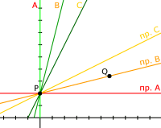

Движение быстрее света
В этой заметке я хочу привести некоторые соображения в пользу того, что движение со скоростью большей, чем скорость света, не только не возможно, но и сама мысль о его возможности абсурдна, как попытка заглянуть за горизонт.
Движение быстрее света с точки зрения причинности
Можно ли передать сигнал со скоростью превосходящей скорость света? Обычно доказательства того, что это сделать нельзя строят на соображениях причинно-следственной связи событий. Я не буду отступать от этой схемы, но добавлю к ней наглядную геометрическую интерпретацию.
На следующем рисунке изображены три наблюдателя: A — неподвижен, B — движется с небольшой скоростью, C — движется быстрее. Их одновременные пространства подписаны как «пр.А», «пр.B» и «пр.С».

Буквами P и Q обозначены две точки. Если у нас в распоряжении будет сигнал, способный двигаться быстрее скорости света, то в наших единицах измерения его мировая линия будет наклонена под углом меньше 45 градусов, и он сможет достичь точки Q, выйдя из P.
Итак допустим, что такой сигнал есть. Тогда события в точках P и Q обретают причинно-следственную связь. Событие Q становится следствием события P. Но это только с точки зрения неподвижного наблюдателя, который увидит P раньше, чем Q. Однако наблюдатель C будет совсем другого мнения, для него Q случится раньше, чем P. Если мы предположим, что событие P вызвало событие Q, то движущейся наблюдатель увидит странную картину: бушущее предопределило прошлое, а не наоборот; сперва наступило следствие (Q) и только потом последовала причина (P).
Если такая ситуация и возможна, то всю современную физику придётся полностью пересмотреть. Пока же никто никогда не видел, чтобы следствие наступало раньше причины.
Именно в этом обычно усматривается парадокс и большинство авторов делают вывод: следовательно двигаться быстрее скорости света нельзя.
Однако находятся «горячие головы», которые говорят наоборот: следовательно нам осталось только найти нечто, что движется быстрее света и мы сможем менять местами причины и следствия, строить машины времени и различные фантастические телепортаторы. Специально для них я пишу следующий пункт.
Абсурдность движения массивных тел быстрее света
Давайте представим, что из точки P в точку Q движется некое тело, имеющее ненулевую массу. Скорость этого тела конечно будет больше скорости света. В своём движении это тело проходит все точки, лежащие между P и Q (то есть бесконечно много точек). Что странного будет в этом движении.
О первой странности мы уже сказали: с точки зрения наблюдателя A тело движется из P в Q, с точки зрения наблюдателя C — наоборот — из Q в P.
Одного этого достаточно, чтобы усомниться в возможности такого движения, но есть и вторая странность.
Взгляните на ситуацию с точки зрения наблюдателя B. Все точки, через которые проходит тело, двигаясь от P до Q, принадлежат его одновременному пространству. То есть движущееся тело находится в его пространстве одновременно бесчисленное число раз. Если тело имело некую массу, то в пространстве наблюдателя В бесчисленное число копий этого тела образуют стержень бесконечной массы, который появится на мгновенье и сразу исчезнет.
Можно ли допустить появление и исчезновение стержня с массой, превышающей массу Вселенной или любую другую массу, какую бы вы не загадали наперёд?